这次我修正了提取边界
4 月 1 日真正要看的，不只是「1.1 吃柠檬」，而是整块 4月1日更新：包含 1. 剧本：吃辣椒的变种 下的 1.1 ~ 1.5，以及 2. 方向：做正确的事情 慢即是快。
这次按你说的改成逐段左右对照：左边放原文摘录、原始样本图和链接，右边放我对应位置的 AI 评判、提炼重点、复刻建议和风险提示。
4 月 1 日真正要看的，不只是「1.1 吃柠檬」，而是整块 4月1日更新：包含 1. 剧本：吃辣椒的变种 下的 1.1 ~ 1.5，以及 2. 方向：做正确的事情 慢即是快。
作者先回顾 2 月 25 日已经记录过这条剧本，强调：虽然常见说法是一个爆款剧本大概能打 20 天，但 20 天后并不等于不能用了。
真正该拆的是 核心爆点，不是表面题材。作者把“吃辣椒”和“海难”归到同一种底层结构：前半段异常钩子，后半段为了爱/关系的舍身反转。
也正因为底层结构稳，这条线才会继续扩成吃柠檬、化女妆、跳芭蕾、跳芭蕾2 等变种。


原文备注：19 天前，952 万，英文。
https://www.youtube.com/shorts/3x7LilYhhtY


原文备注：18 天前，178 万，英文。
https://www.youtube.com/shorts/W7Mik8Cz2E8
作者认为这条“题材本来不错，本来也可以上千万，但最终只停在 100 多万”。问题主要在于：
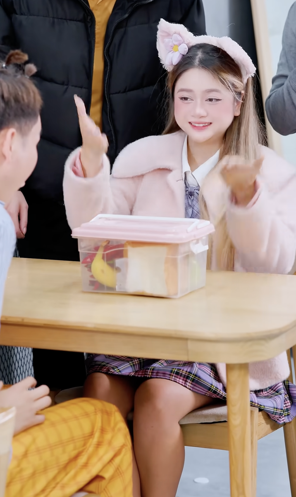
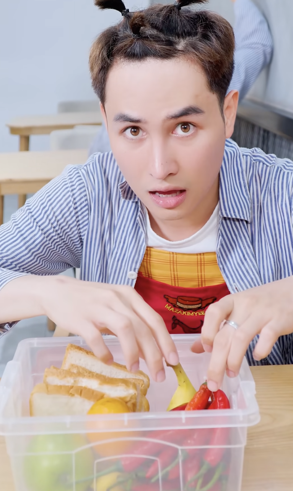
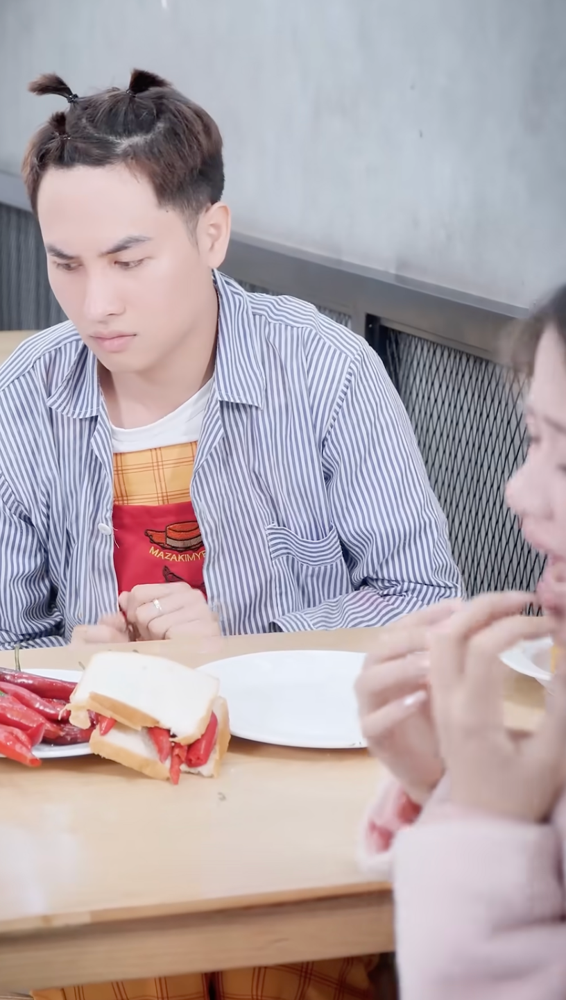
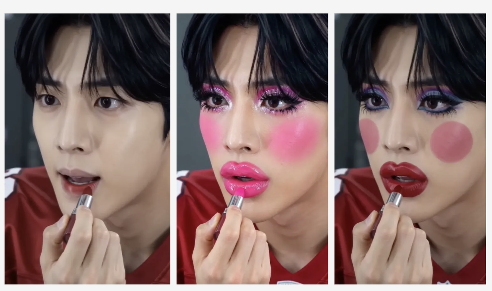
https://www.youtube.com/shorts/bSE5DblMXgs
这一段作者明显更认可。他在原文里强调了三个设计点：
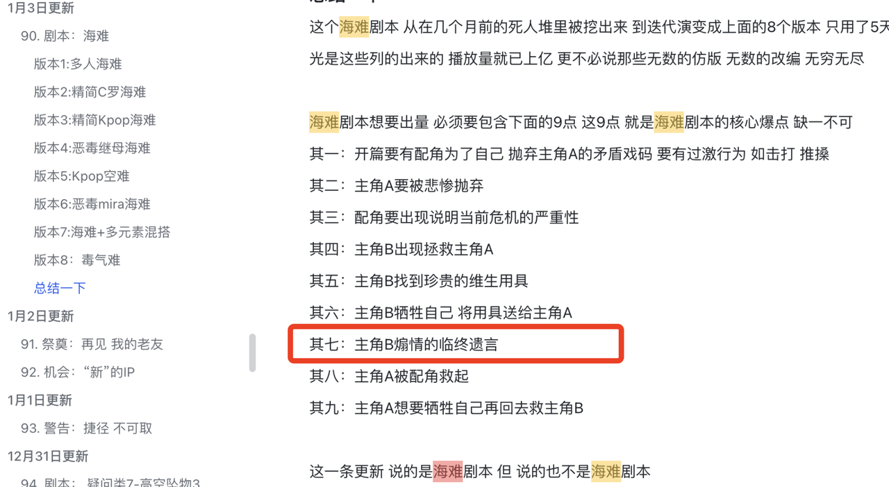
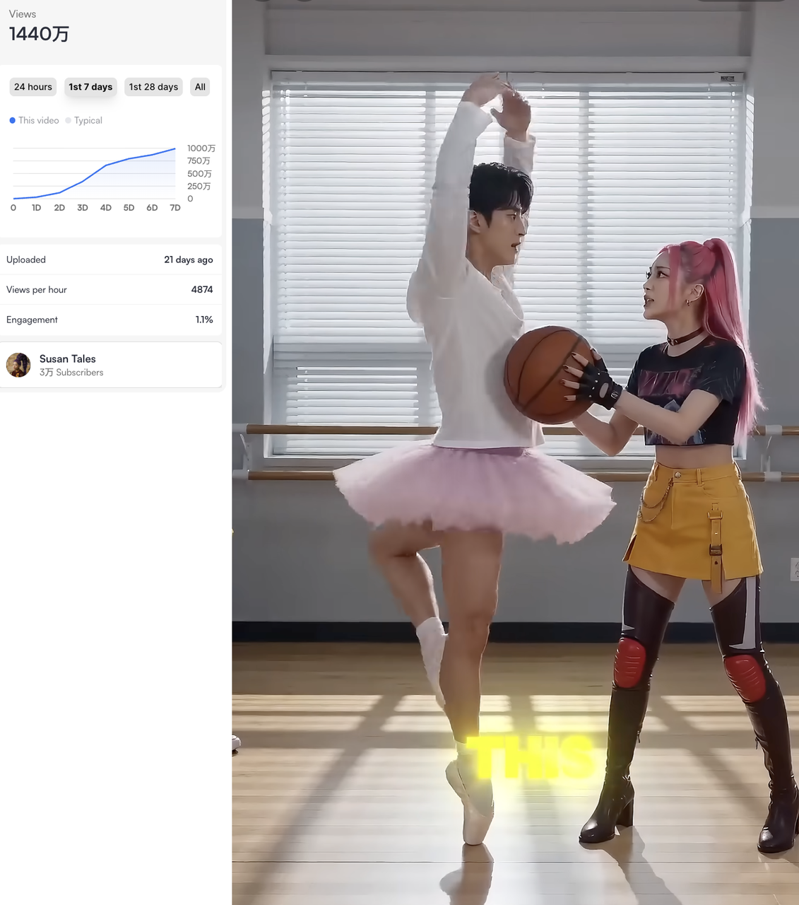
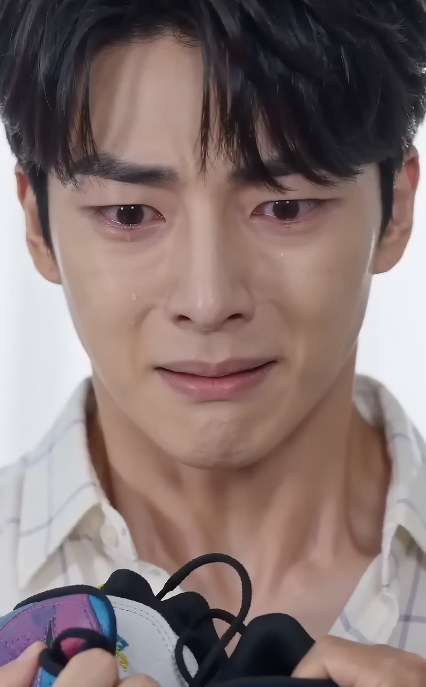
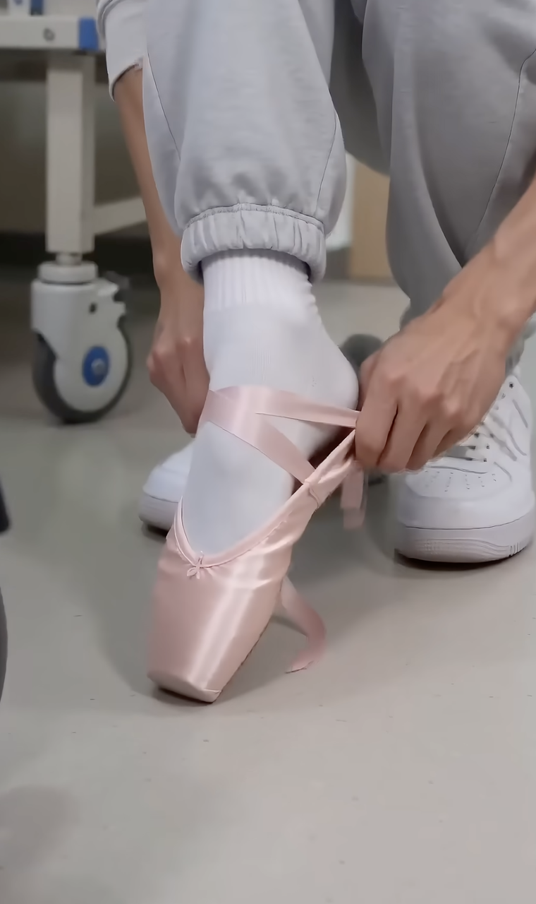
原文备注：2 天前，1269 万。
https://www.youtube.com/shorts/JJOEyU3XMkA
作者直接说：在跳芭蕾微调发了 21 天之后，这一版前天再发竟然还能冲到千万播放，已经足够说明这个剧本有多强。
但他也马上补刀：这一版虽然把父母配角换成印度脸，可能是想吃一点印度流量，但无论从机械筛查还是人工核验角度，这么像的内容都很难逃过同质化清算。

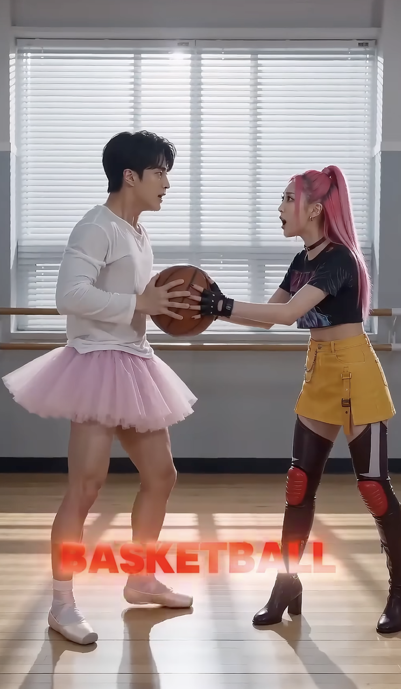
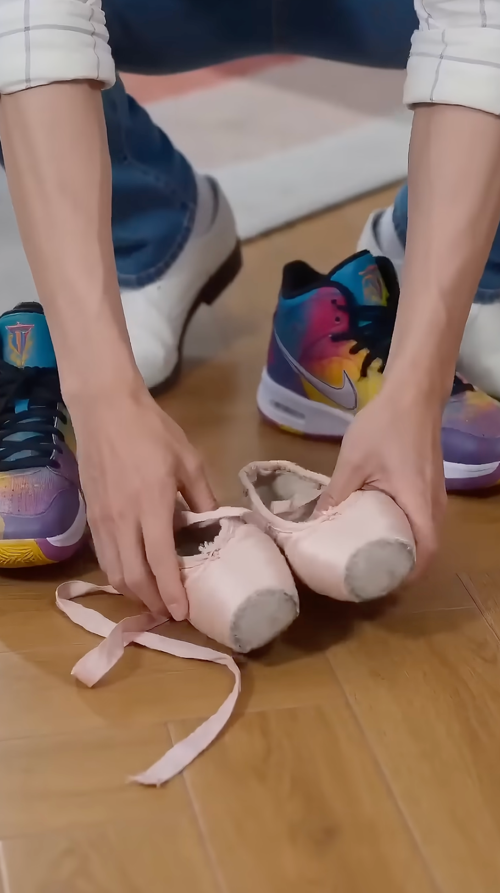
作者把时间轴说得很清楚：2 月 16 日的原始吃辣椒爆款，到 4 月 1 日已经拖到 40 天左右，依然还能爆，直接刷新了他过去“剧情剧本大概 20 天”的认知。
这一段已经不是样本点评，而是作者对平台风向的系统判断。他把 AI 油管这两年的变化按时间列出来：
作者的结论很直接：YouTube 不是要封杀 AI，而是要在算力和产能越来越夸张的时代里，主动降低重复内容，保护平台生态。
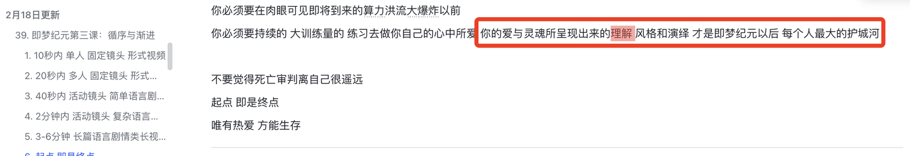
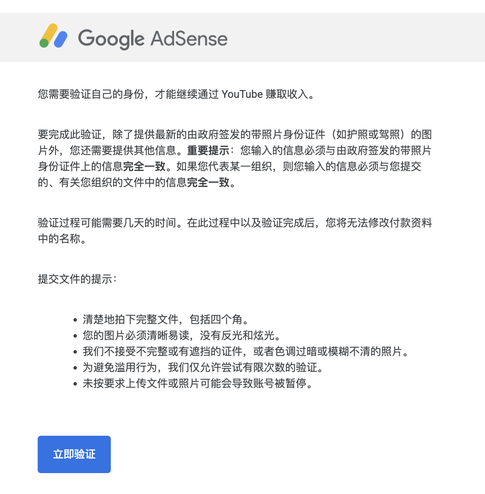
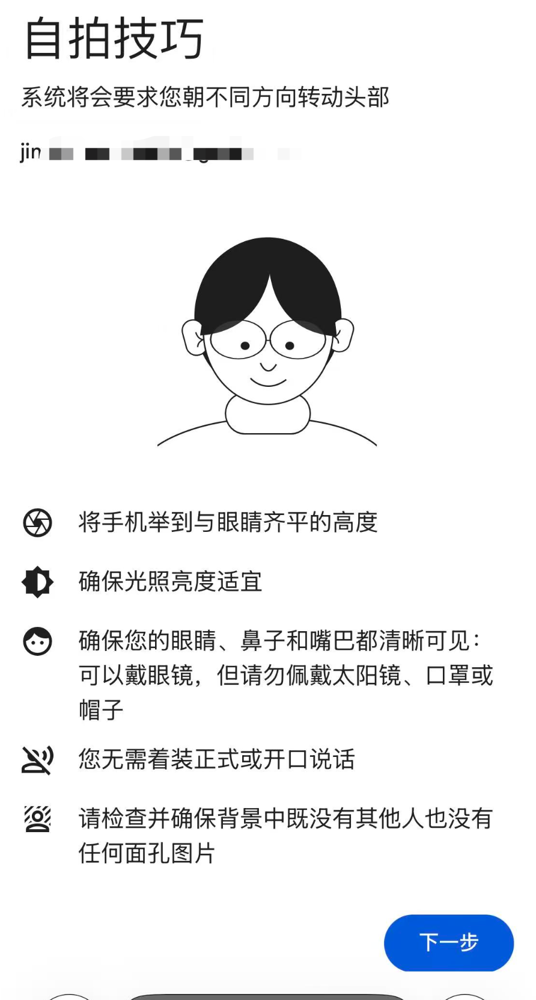